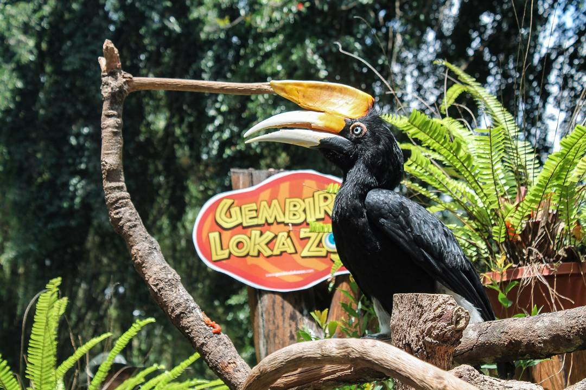
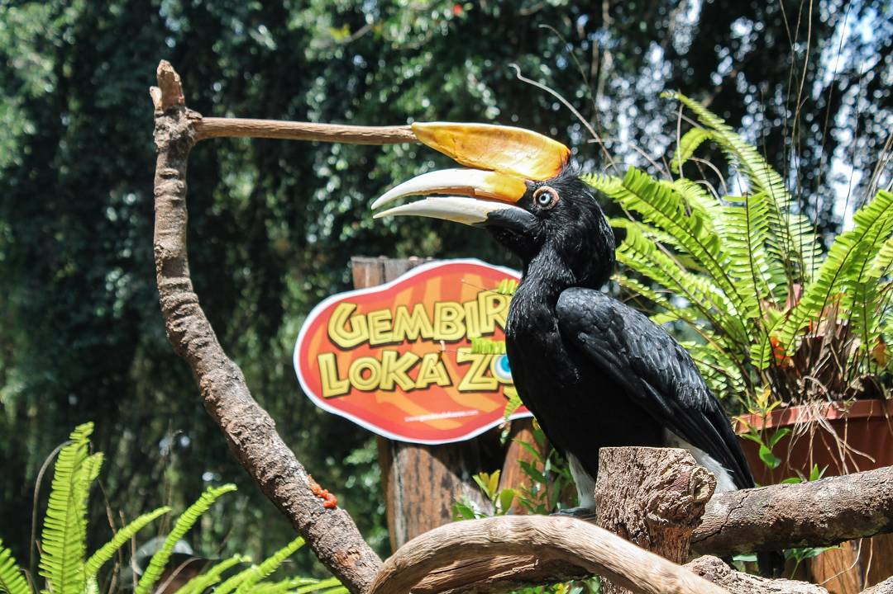

.png)
Gembira Loka Zoo Jogja adalah salah satu destinasi populer di Yogyakarta yang memberikan pengalaman seru dan menggembirakan bagi pengunjung dari segala usia. Dengan luas area sekitar 54 hektar, kebun binatang ini menawarkan berbagai macam atraksi dan koleksi hewan yang mengagumkan. Setiap tahun, ribuan wisatawan lokal dan mancanegara datang ke Gembira Loka Zoo untuk menikmati keindahan alam serta keberagaman satwa yang ada.
.jpg)
 

Overall a fun and educational zoo. We loved our time there, parking was easy and a lot of accessible path for stroller or wheelchair. Restaurants and restrooms are also readily avaliable although the foods are rather expensive.
Always become best choice to visit when having vacation at Jogja for education. I think has good maintenance and clean. Easy to find parking and not to long time to buy ticket...

Green place in town. A selection of animals like pets, fish, birds (incl. some penguins), primates, reptiles, a few wild ones, and elephants. You can buy feed there for some animals. Ticket -80 thousand- covers every amusement like boat & train rides. It's worth it as you can hop on/off the train around the zoo. If you're hungry, there are lots of food & drinks/icecream vendors etc, & you may bring your own food. Lots of souvenir & toy shops, too. Toilets are in some spots. A prayers room is available. Recommended to have rural/forest vibes inside the human highly populated city!